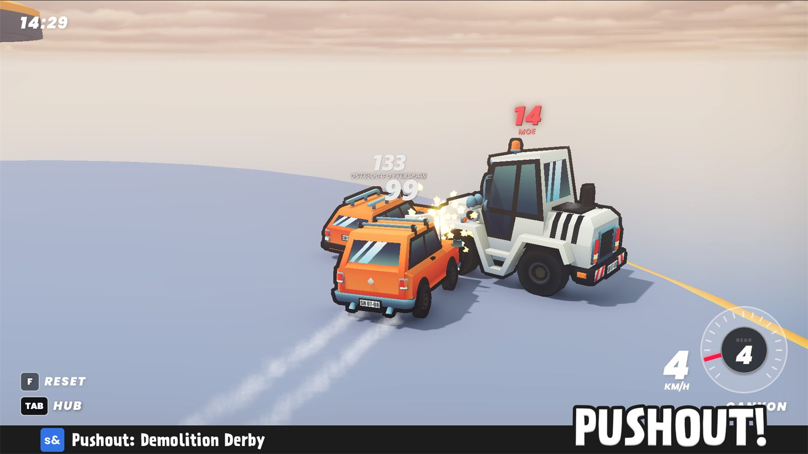
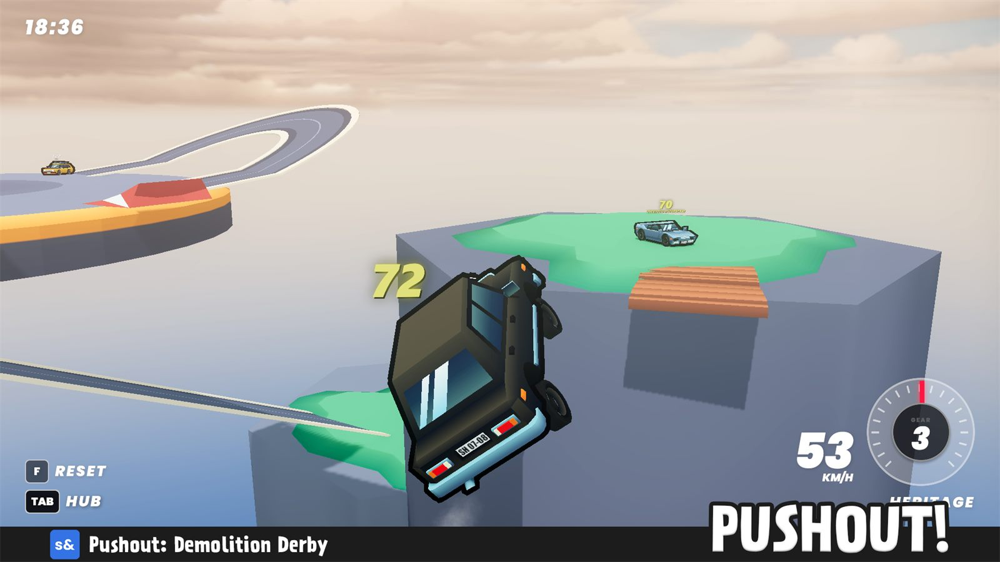
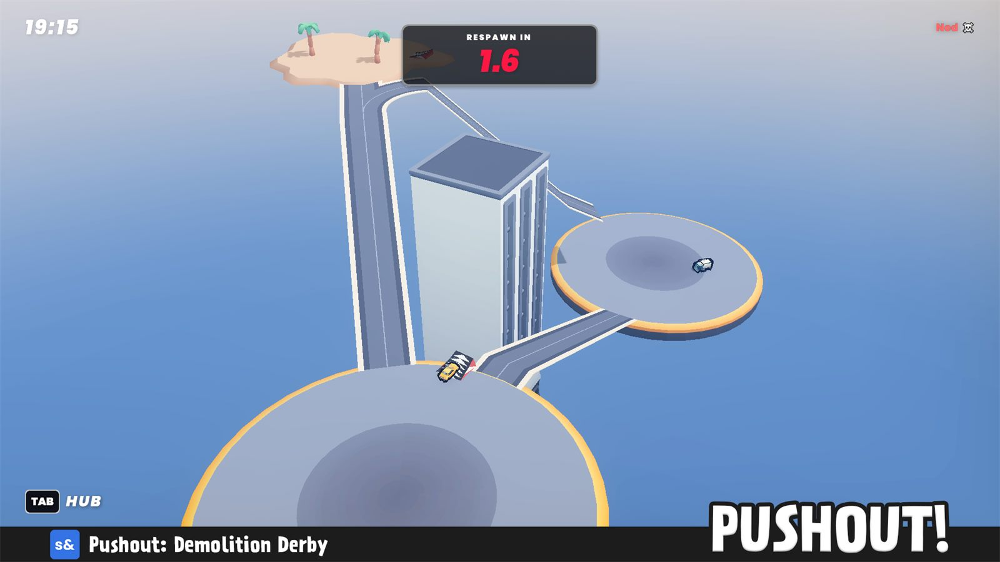

Pushout: Demolition Derby
Dynamiczny vehicle combat online. Wytrzymaj na arenie 240 sekund i wypchnij rywali poza platformę. Inspiracja: klasyczne tryby Demolition Derby i Sumo z SA:MP i MTA.
- Graczy w pierwszym miesiącu
- 848
- Sesji w ostatnim tygodniu
- 972
- Rekord graczy jednego dnia
- 189
- Godzin rozgrywki łącznie
- 155

O projekcie
Autorska zręcznościówka online nastawiona na fizykę i rywalizację. Wskrzesza mechanikę znaną z kultowych modyfikacji GTA San Andreas (SA:MP/MTA) i przenosi ją na silnik Source 2. Gra jest w otwartej becie i stale zbiera społeczność na platformie s&box.
Odpowiadam za pełny cykl produkcji: projekt mechanik, architekturę kodu, sieciową synchronizację fizyki, UI i analitykę.
Mechaniki
- Walka pojazdami na fizycePęd, masa i prędkość decydują o zderzeniu. Eliminujesz rywali taranowaniem i wypychaniem, liczy się timing.
- Multiplayer w trybie SumoMecze z 16-minutowym limitem czasu i szybkim respawnem po 10 sekundach.
- Skill-based gameplayWygrywa pozycjonowanie i kontrola pędu, a nie bezmyślna jazda na pełnym gazie.



Stack
Czego się nauczyłem
Optymalizacji kodu pod rozgrywkę wieloosobową i pracy z fizyką Source 2 w s&box. Ponad 1200 rozegranych sesji i setki unikalnych graczy dały mi feedback na żywo: analizę błędów na produkcji i szybkie zmiany balansu (LiveOps), które sprawdziły architekturę w realnych warunkach.